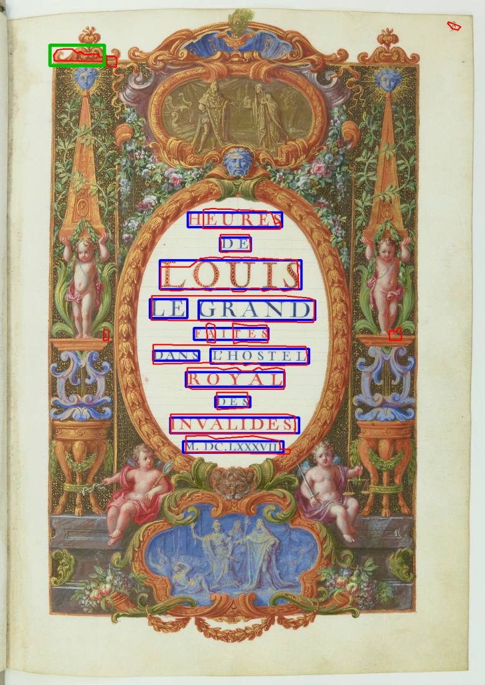
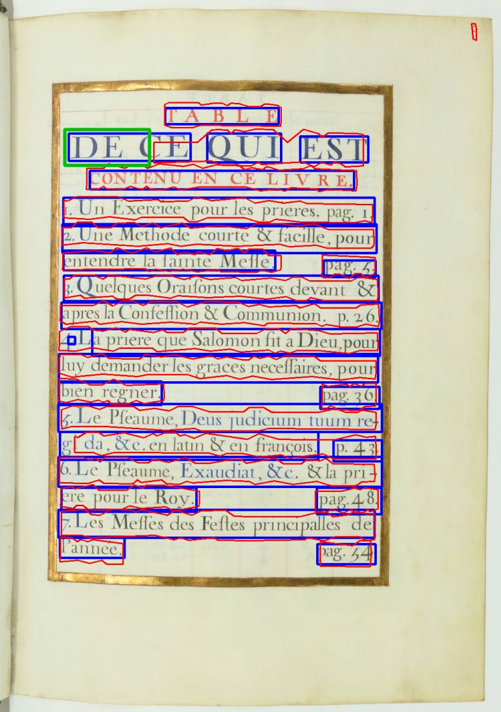
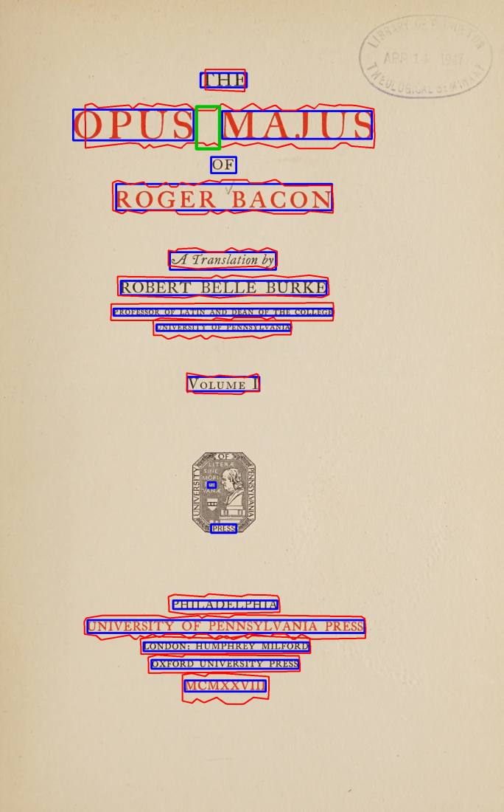
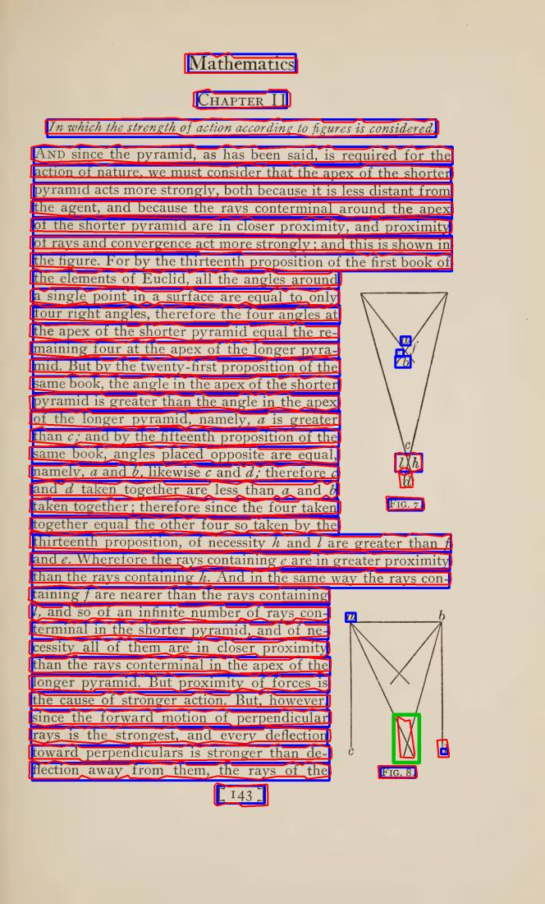
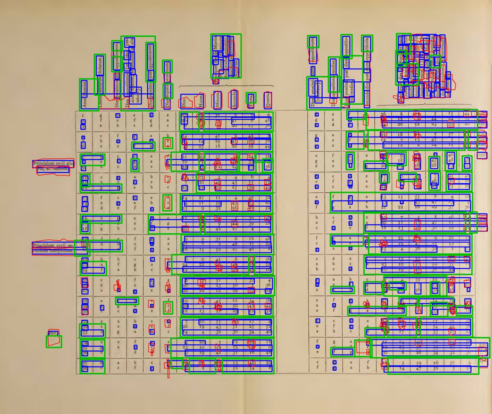
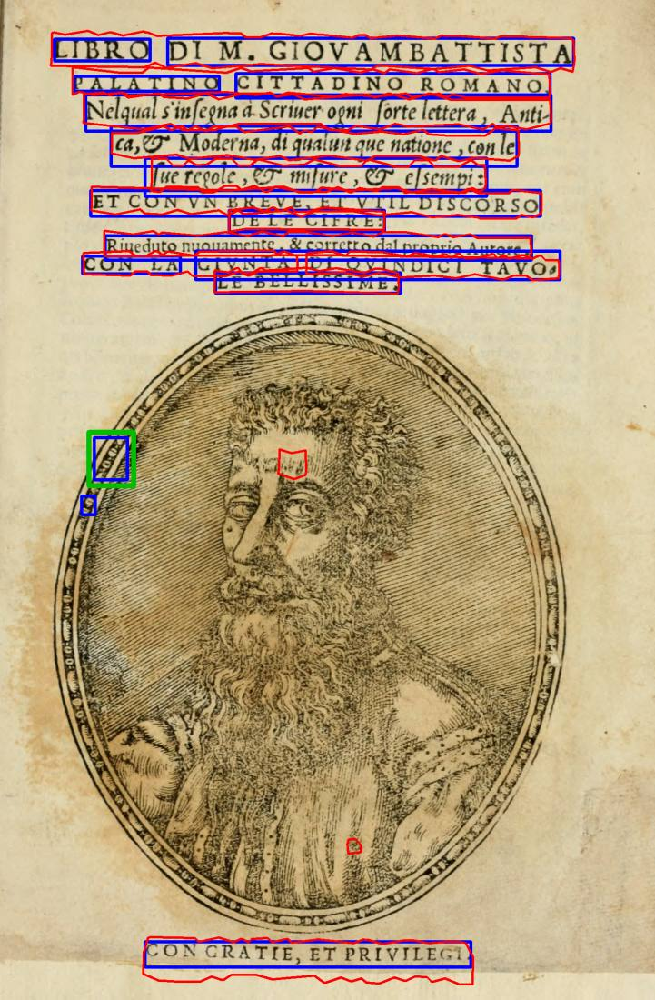
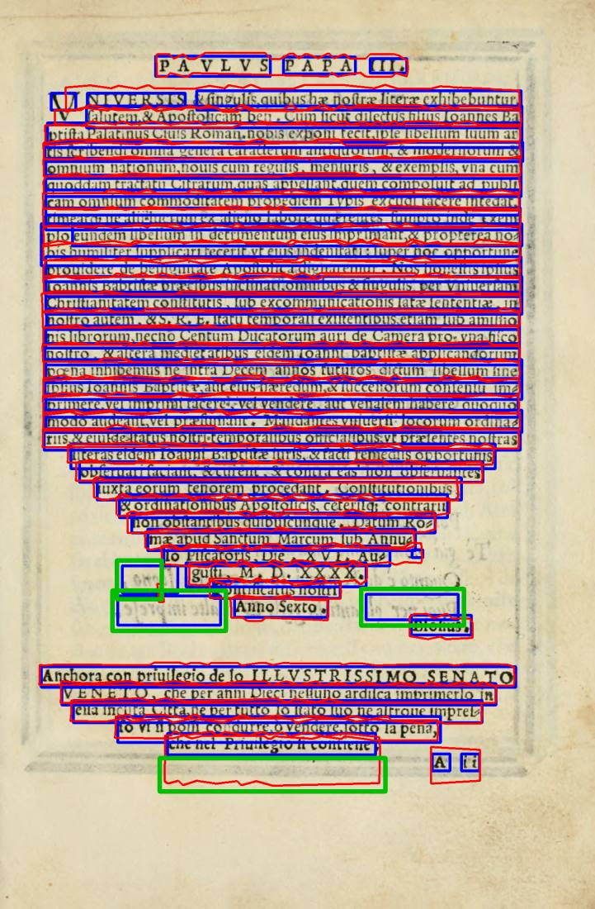
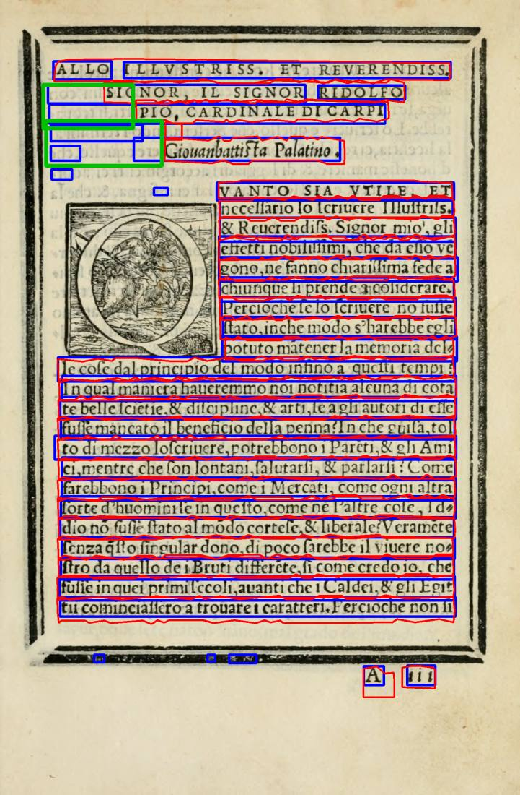
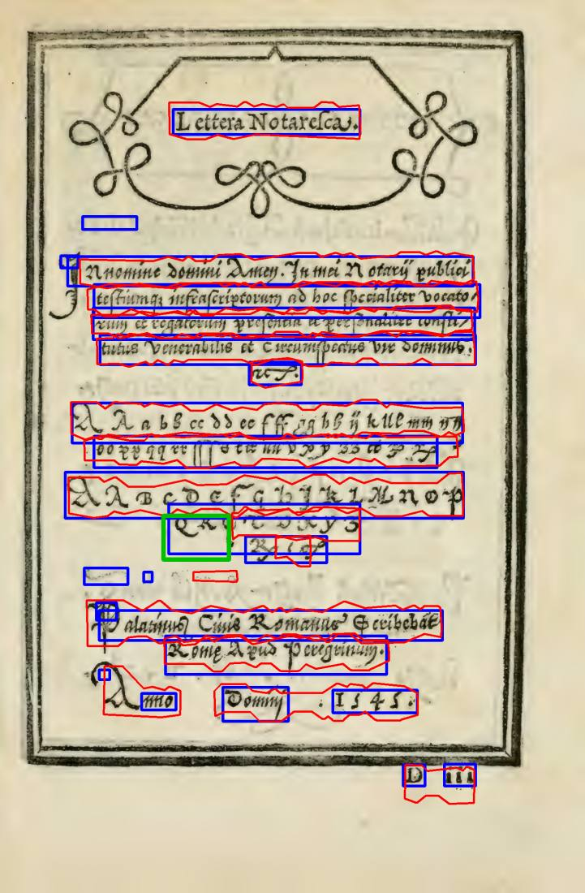
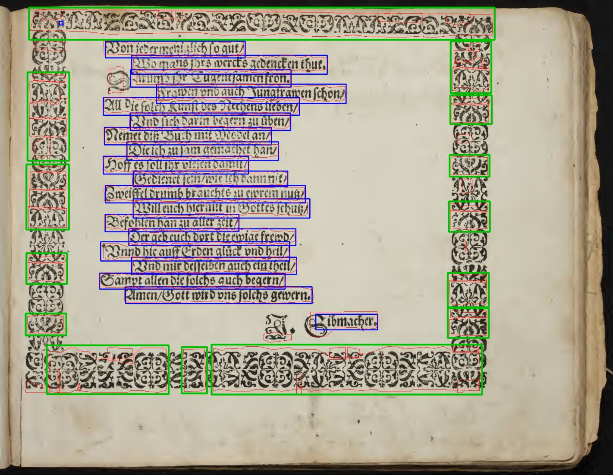

29/09/2026 · implementador · teste de máquina (calibração). Nada foi ligado ao programa.
Atenção, Samuel: isto ainda não aparece no programa. O programa ainda não roda os OCRs nem tem o "Para revisar" deles. A calibração usou o que já se sabia das 22 páginas da comparação de 28/09, e a folga entre página boa e página com erro é pequena (seção 4).
| Conta? | O quê | Por quê |
|---|---|---|
| sim | Um pedaço de página que um OCR marca como texto e o outro não, do tamanho de uma palavra ou maior (1,4 "quadrados de altura de linha"; uma letra grande dá cerca de 1). | É o erro que importa: caixa em gravura ou na mancha do verso, ou palavra perdida. |
| sim | O próprio OCR avisa que perdeu linhas (o Kraken, na tabela do Opus Majus 256: 8 linhas). | Texto sumido em silêncio. |
| sim | Um OCR ligado não conseguiu ler a página. | Não houve comparação. |
| não | Uma letra solta a mais ou a menos. | Aparece em quase toda página (as letrinhas da coluna do calendário das Horas 26). |
| não | Borda da caixa diferente. | O docTR desenha retângulos e o Kraken desenha contornos colados na letra; a comparação dá uma folga de 0,35 altura de linha. |
| não | Número de linhas muito diferente, ou uma linha partida em duas. | Varia demais em página boa: na Horas 27 o docTR acha 38 linhas e o Kraken 74, porque o Kraken separa as colunas do calendário. Esses números ficam guardados nas medidas, mas não decidem. |
A "maior zona" é o maior pedaço de desacordo, em quadrados de altura de linha. O limite é 1,4.
| Página | Decisão | Maior zona | Motivo que o programa daria | O que já se sabia |
|---|---|---|---|---|
| Palatino 5 | revisar | 2,16 | O docTR achou texto nesta área e o Kraken não | docTR: caixinhas na borda do retrato (é isso que foi marcado) |
| Palatino 7 | revisar | 9,35 | O docTR achou texto em 3 lugares e o Kraken não; o Kraken achou texto nesta área e o docTR não | docTR: caixas em letras fantasmas da mancha do verso; Kraken: contorno grande no papel embaixo |
| Palatino 9 | revisar | 4,02 | O docTR achou texto em 2 lugares e o Kraken não | docTR: caixas nos fantasmas da mancha do verso (marcado) |
| Palatino 10 | concorda | 0,60 | - | boa |
| Escola 7 | concorda | 0,72 | - | boa |
| Horas 11 | revisar | 1,92 | O Kraken achou texto nesta área e o docTR não | Kraken: contorno na iluminura (marcado) e perde parte do título |
| Horas 13 | revisar | 3,05 | O docTR achou texto nesta área e o Kraken não | Kraken perde o "DE" grande (marcado); docTR encosta na moldura |
| Horas 47 | concorda | 0,00 | - | boa |
| Opus Majus 11 | concorda | 1,13 | - | boa |
| Opus Majus 3 | revisar | 1,64 | O Kraken achou texto nesta área e o docTR não | docTR no emblema e Kraken perde o "OF". O que foi marcado é outra coisa: o vão entre OPUS e MAJUS |
| Opus Majus 20 | concorda | 0,00 | - | boa |
| Opus Majus 165 | revisar | 1,65 | O Kraken achou texto nesta área e o docTR não | Kraken: linha num traço do diagrama (marcado) |
| Opus Majus 256 | revisar | 73,57 | O Kraken avisou que não conseguiu desenhar 8 linhas; o docTR achou texto em 93 lugares e o Kraken não; o Kraken achou texto em 5 lugares e o docTR não | Kraken perde a tabela |
| Horas 26 | concorda | 1,11 | - | boa |
| Horas 27 | concorda | 0,47 | - | boa |
| Escola 35 | concorda | 0,70 | - | boa |
| Rhetorica 18 | concorda | 0,86 | - | boa |
| Siebmacher 9 | revisar | 42,39 | O Kraken achou texto em 14 lugares e o docTR não | Kraken: toma a moldura ornamental por texto (marcado) |
| Palatino 57 | revisar | 1,65 | O docTR achou texto nesta área e o Kraken não | os dois perdem parte do título; o Kraken perde o "QR" (marcado) |
| Graduale 221 | concorda | 0,94 | - | boa |
| Graduale 222 | concorda | 0,00 | - | boa |
| Graduale 223 | concorda | 0,00 | - | erro não pego: os dois perdem o mesmo texto |
Cada frase de motivo termina com "confira se há texto ou mancha." Na tela, cada lugar marcado virá com a caixa dele (as imagens da pasta zonas\ mostram o docTR em azul, o Kraken em vermelho e o lugar marcado em verde).
Resultado: a decisão bate com o que se sabia em 21 de 22 páginas. Nenhuma página foi para revisar à toa, e um erro conhecido não foi pego (Graduale 223).
| OCRs ligados | Vão para revisar | Concordam |
|---|---|---|
| docTR + Tesseract | 21 de 22 | só o Opus 20 |
| Kraken + Tesseract | 19 de 22 | Palatino 10, Opus 20, Horas 26 |
| os três | 21 de 22 | só o Opus 20 |
O Tesseract desenha "linhas" que cobrem blocos inteiros, incluindo o espaço entre colunas e a gravura (Siebmacher, Escola 7, Opus 3). Ele também não acha nada na Horas 11 nem no Graduale 222. Ligado, ele manda quase tudo para revisar.
Medido com a régua da comparação de 28/09: zonas do gabarito, tinta pela Sauvola, caixas alargadas 15%.
| Como juntar | Texto achado (média, 19 páginas) | Sem o Opus 256 | Páginas com mais de 1% de figura tomada |
|---|---|---|---|
| União (qualquer um dos dois) | 99,1% | 99,8% | 7 (Palatino 5 e 9, Horas 13 e 47, Opus 3 e 165, Siebmacher 9) |
| Interseção (ponto a ponto, os dois) | 95,0% | 98,5% | 0 |
| Voto por linha (escolhido) | 96,1% | 99,4% | 2 (Horas 13: 8,5%; Horas 47: 1,07%) |
saida_teste\ocr-comparar\ (fora do git). Com OCR_22=1, o teste roda as pontes de verdade e confere a mesma decisão.core\ocr_comparar.py: a comparação (comparar()), com o que é seguro e arriscado mudar.tests\test_ocr_comparar.py: testes sintéticos e as 22 páginas.scripts\rodar_pontes.py: roda as três pontes nas 22 páginas e guarda o resultado.scripts\calibrar.py: refaz as seções 3 e 5 e grava resultados.json.zonas\: as 10 páginas que vão para revisar (docTR azul, Kraken vermelho, lugar marcado verde).docTR em azul, Kraken em vermelho, lugar marcado em verde.










Editor de Impressão · gerado em 29/09/2026 às 19:56